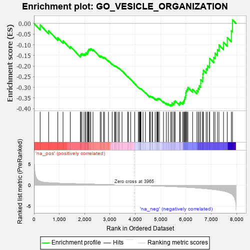
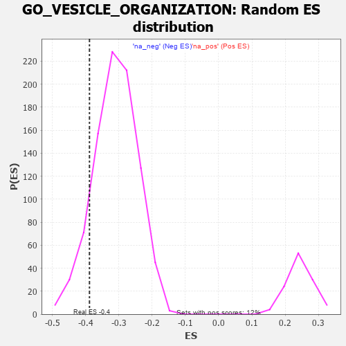

| | | Dataset | 7d |
| Phenotype | NoPhenotypeAvailable |
| Upregulated in class | na_neg |
| GeneSet | GO_VESICLE_ORGANIZATION |
| Enrichment Score (ES) | -0.3885412 |
| Normalized Enrichment Score (NES) | -1.250665 |
| Nominal p-value | 0.1123723 |
| FDR q-value | 0.54340994 |
| FWER p-Value | 1.0 |
Table: GSEA Results Summary

Fig 1: Enrichment plot: GO_VESICLE_ORGANIZATION
Profile of the Running ES Score & Positions of GeneSet Members on the Rank Ordered List
| PROBE | GENE SYMBOL | GENE_TITLE | RANK IN GENE LIST | RANK METRIC SCORE | RUNNING ES | CORE ENRICHMENT | | 1 | NSF | | | 243 | 0.947 | -0.0068 | No |
| 2 | MX1 | | | 578 | 0.604 | -0.0339 | No |
| 3 | STX17 | | | 940 | 0.497 | -0.0671 | No |
| 4 | SNX19 | | | 1146 | 0.454 | -0.0816 | No |
| 5 | CHMP7 | | | 1435 | 0.403 | -0.1080 | No |
| 6 | UVRAG | | | 1831 | 0.332 | -0.1497 | No |
| 7 | AP1M1 | | | 1853 | 0.327 | -0.1441 | No |
| 8 | CUL3 | | | 1893 | 0.321 | -0.1409 | No |
| 9 | MCFD2 | | | 1975 | 0.309 | -0.1433 | No |
| 10 | VPS25 | | | 2033 | 0.300 | -0.1429 | No |
| 11 | GOSR2 | | | 2050 | 0.298 | -0.1374 | No |
| 12 | STX16 | | | 2116 | 0.289 | -0.1383 | No |
| 13 | SNF8 | | | 2119 | 0.288 | -0.1313 | No |
| 14 | VPS8 | | | 2144 | 0.285 | -0.1271 | No |
| 15 | CNIH1 | | | 2159 | 0.283 | -0.1217 | No |
| 16 | C2CD5 | | | 2204 | 0.276 | -0.1202 | No |
| 17 | CREB1 | | | 2243 | 0.269 | -0.1182 | No |
| 18 | SEC13 | | | 2330 | 0.256 | -0.1227 | No |
| 19 | VAV3 | | | 2614 | 0.210 | -0.1533 | No |
| 20 | VPS4A | | | 2654 | 0.205 | -0.1530 | No |
| 21 | LMAN1 | | | 2743 | 0.192 | -0.1593 | No |
| 22 | SCFD1 | | | 2783 | 0.185 | -0.1596 | No |
| 23 | GOSR1 | | | 2940 | 0.159 | -0.1753 | No |
| 24 | STX6 | | | 3087 | 0.138 | -0.1903 | No |
| 25 | AKTIP | | | 3178 | 0.125 | -0.1986 | No |
| 26 | AP1G1 | | | 3210 | 0.121 | -0.1995 | No |
| 27 | TFG | | | 3243 | 0.114 | -0.2006 | No |
| 28 | RAB8A | | | 3319 | 0.102 | -0.2076 | No |
| 29 | VPS16 | | | 3370 | 0.093 | -0.2116 | No |
| 30 | HGS | | | 3476 | 0.080 | -0.2228 | No |
| 31 | VTA1 | | | 3697 | 0.043 | -0.2497 | No |
| 32 | SYT11 | | | 3732 | 0.036 | -0.2531 | No |
| 33 | BET1 | | | 3817 | 0.025 | -0.2631 | No |
| 34 | CHMP6 | | | 3977 | -0.003 | -0.2832 | No |
| 35 | EXOC8 | | | 4120 | -0.026 | -0.3006 | No |
| 36 | STX7 | | | 4147 | -0.033 | -0.3030 | No |
| 37 | SYNJ1 | | | 4173 | -0.038 | -0.3053 | No |
| 38 | STAM2 | | | 4193 | -0.041 | -0.3066 | No |
| 39 | VPS11 | | | 4202 | -0.041 | -0.3066 | No |
| 40 | GBF1 | | | 4215 | -0.044 | -0.3070 | No |
| 41 | VTI1A | | | 4224 | -0.046 | -0.3069 | No |
| 42 | SAR1A | | | 4304 | -0.060 | -0.3154 | No |
| 43 | STX5 | | | 4400 | -0.077 | -0.3255 | No |
| 44 | STX2 | | | 4562 | -0.108 | -0.3432 | No |
| 45 | VPS28 | | | 4582 | -0.114 | -0.3427 | No |
| 46 | SYT4 | | | 4590 | -0.116 | -0.3406 | No |
| 47 | CHMP3 | | | 4660 | -0.129 | -0.3461 | No |
| 48 | CLCN3 | | | 4678 | -0.134 | -0.3449 | No |
| 49 | RAB14 | | | 4784 | -0.155 | -0.3543 | No |
| 50 | VPS36 | | | 4845 | -0.167 | -0.3577 | No |
| 51 | USO1 | | | 4855 | -0.168 | -0.3545 | No |
| 52 | TMCC1 | | | 4885 | -0.174 | -0.3538 | No |
| 53 | VAMP8 | | | 4905 | -0.179 | -0.3517 | No |
| 54 | CHMP5 | | | 4952 | -0.188 | -0.3527 | No |
| 55 | DOC2B | | | 5113 | -0.229 | -0.3672 | No |
| 56 | TMF1 | | | 5225 | -0.251 | -0.3750 | No |
| 57 | RAB7A | | | 5302 | -0.271 | -0.3778 | No |
| 58 | DLG4 | | | 5388 | -0.293 | -0.3811 | Yes |
| 59 | IST1 | | | 5442 | -0.305 | -0.3801 | Yes |
| 60 | LYST | | | 5448 | -0.307 | -0.3730 | Yes |
| 61 | TRIM9 | | | 5526 | -0.327 | -0.3744 | Yes |
| 62 | VPS39 | | | 5533 | -0.329 | -0.3669 | Yes |
| 63 | SPHK1 | | | 5576 | -0.339 | -0.3636 | Yes |
| 64 | MX2 | | | 5745 | -0.390 | -0.3750 | Yes |
| 65 | VAMP7 | | | 5777 | -0.399 | -0.3688 | Yes |
| 66 | RAB13 | | | 5870 | -0.425 | -0.3697 | Yes |
| 67 | RAB32 | | | 5909 | -0.438 | -0.3635 | Yes |
| 68 | VAPA | | | 5939 | -0.449 | -0.3557 | Yes |
| 69 | AGFG1 | | | 5955 | -0.457 | -0.3461 | Yes |
| 70 | SCAP | | | 5986 | -0.466 | -0.3380 | Yes |
| 71 | SYT9 | | | 5992 | -0.469 | -0.3268 | Yes |
| 72 | PTPRN | | | 6007 | -0.474 | -0.3165 | Yes |
| 73 | VAMP3 | | | 6043 | -0.487 | -0.3086 | Yes |
| 74 | CALR | | | 6077 | -0.499 | -0.3002 | Yes |
| 75 | AP3D1 | | | 6261 | -0.558 | -0.3092 | Yes |
| 76 | EEA1 | | | 6430 | -0.631 | -0.3146 | Yes |
| 77 | DYSF | | | 6481 | -0.654 | -0.3043 | Yes |
| 78 | VAMP2 | | | 6525 | -0.672 | -0.2927 | Yes |
| 79 | CLN3 | | | 6580 | -0.699 | -0.2818 | Yes |
| 80 | ARF1 | | | 6583 | -0.701 | -0.2643 | Yes |
| 81 | VPS18 | | | 6659 | -0.743 | -0.2550 | Yes |
| 82 | TMED2 | | | 6665 | -0.746 | -0.2367 | Yes |
| 83 | CPLX1 | | | 6684 | -0.753 | -0.2199 | Yes |
| 84 | TBPL1 | | | 6798 | -0.814 | -0.2136 | Yes |
| 85 | VPS41 | | | 6850 | -0.841 | -0.1987 | Yes |
| 86 | SNX33 | | | 6930 | -0.888 | -0.1862 | Yes |
| 87 | SNX3 | | | 6934 | -0.893 | -0.1639 | Yes |
| 88 | RAB1A | | | 7096 | -0.993 | -0.1592 | Yes |
| 89 | SYT1 | | | 7148 | -1.033 | -0.1394 | Yes |
| 90 | ABCA1 | | | 7243 | -1.113 | -0.1231 | Yes |
| 91 | MYO7A | | | 7302 | -1.175 | -0.1007 | Yes |
| 92 | VAPB | | | 7482 | -1.378 | -0.0885 | Yes |
| 93 | PDCD6 | | | 7630 | -1.615 | -0.0662 | Yes |
| 94 | GRIK5 | | | 7792 | -2.044 | -0.0347 | Yes |
| 95 | GRIA1 | | | 7836 | -2.260 | 0.0171 | Yes |
Table: GSEA details [plain text format]

Fig 2: GO_VESICLE_ORGANIZATION: Random ES distribution
Gene set null distribution of ES for GO_VESICLE_ORGANIZATION